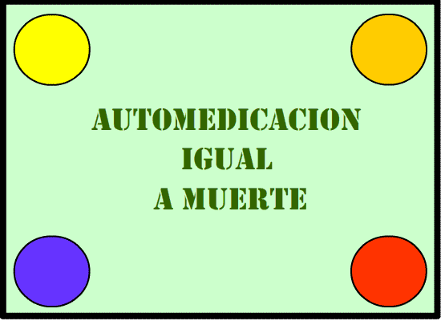

Del informe, titulado La Automedicación en México 2019, se desprende que el 81 % de los mexicanos cuenta con medicamentos básicos en casa, ya sean antitérmicos, analgésicos, antiinflamatorios, digestivos o equipos de primeros auxilios.
El 63 % de los encuestados revelaron que se automedican de forma recurrente para subsanar el dolor de cabeza, el 66 % para resfriados comunes, el 49 % para el dolor de estómago, el 49 % para dolor de garganta y el 35 % para la tos.
Para ello, se administran medicamentos antigripales, analgésicos, antiinflamatorios y antidiarreicos sin ningún tipo de prescripción médica.
El estudio también reveló que el 65 % de los profesionales de la salud de México han detectado en el último año un incremento de entre el 25 % y el 50 % en el número de pacientes que sufren dolencias a causa de la automedicación.
El 66 % de los profesionales han descubierto casos en los que con la automedicación se cubría una enfermedad más grave, el 59 % una resistencia al medicamento, el 53 % efectos secundarios dañinos, el 31 % medicamentos que no sirven y el 31 % intoxicaciones.
El 96 % de los especialistas de salud cree que hay pacientes "que podrían haber tenido un diagnóstico oportuno y más temprano" si no se hubieran automedicado antes de acudir a su consulta.
Mientras que el 94 % de los especialistas cree que, "con la llegada del internet y el acceso a la información, los pacientes se automedican más", por lo que se vuelve fundamental establecer nuevas estrategias de medicación por parte de los especialistas.
